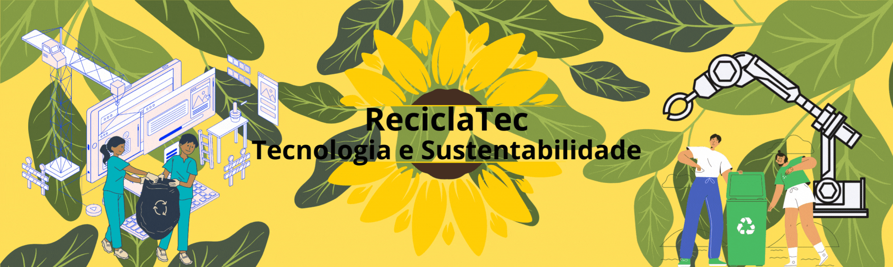
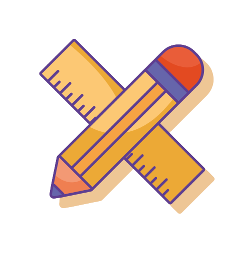
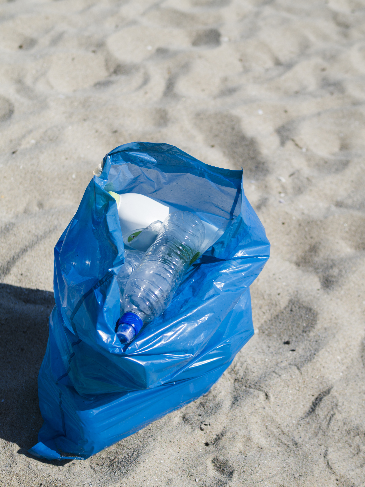

.png)
Missão
Visão

Valores
Temos a missão de estabelecer uma sociedade que garanta um futuro saudável para os nosso descendentes, com uma sociedade sustentável e ecologicamente correta, não ajudando somente a população mas todos os empresários, lucrando e ajudando o meio ambiente participando da causa.
Nossa Visão de negocio é manter uma produção de maquinas gerando um desperdício mínimo ou nulo e termos consciência que a Replast Está fazendo o seu papel em criar uma sociedade mais sustentável.
Há diversos valores mas os mais importantes são a Sustentabilidade, que desejamos manter com a Replast e com a ajuda da sociedade, a Sinceridade, mostramos tudo para quem utiliza nossas máquinas, mostrando o quanto ela colocou de garrafas PET e estatísticas que mostram o quanto ele ajudou o mundo e por ultimo temos a Solidariedade tentando sempre tornar nossa máquina acessível para analfabetos e algumas deficiências.

Como Nascemos
Nascemos a partir da ideia crescente da sociedade de cuidar do meio ambiente. Notamos a crescente preocupação da sociedade com este tema, então percebemos que precisamos estabelecer uma população mais sustentavel e ecologicamente correta.
Percebemos noticias por diversos orgão de noticias como a UNEP que disse: "é destacado que o plástico representa 85% dos resíduos que chegam aos oceanos e adverte que até 2040, os volumes de plástico que chegam ao mar através do descarte incorreto quase triplicarão, com uma quantidade anual entre 23 e 37 milhões de toneladas. Isto significa cerca de 50 kg de plástico por metro de costa em todo o mundo."
Além disso queremos ajudar com os voucher dados depois da coleta com os Reciclapoints assim ajudando com a fome no Brasil que de acordo com a CNN Brasil, entre dezembro de 2021 e abril de 2022, 14 milhões de brasileiros deixaram de comer. Acentuando o estudo na região sudeste segundo a Rede Penssan a partir de dados coletados entre dezembro de 2021 e abril de 2022 existem 6,81 milhões de pessoas com fome.
A Principal maneira de estabelecer isso seria por um meio tecnologico, Então criamos a Replast com um sistema inovador e interativo para a sociedade, estabelecer uma relação de vinculo com o cliente se torna essencial para o projeto, pois sem seu deposito de reciclaveias a maquina nao coleta nada.